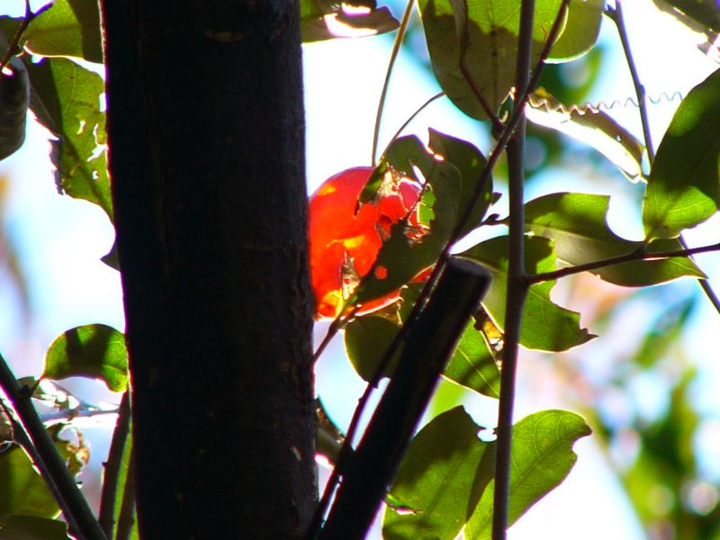
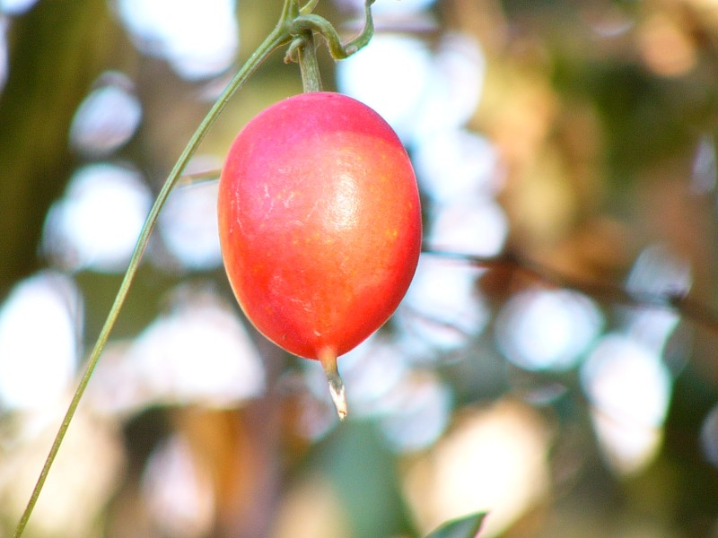
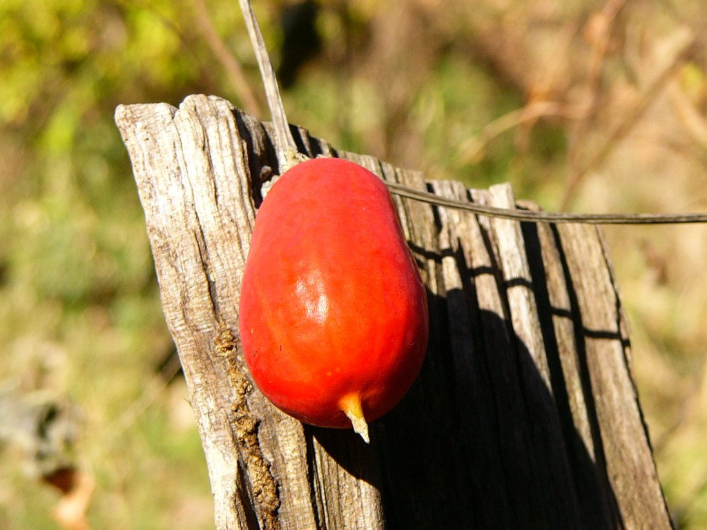

The four seasons
Karasu-Uri
The four seasons
Karasu-Uri
It became a season when ice needles stood out.
The broad leaf of the tree that had become yellow began to fall all together.
Since it was in such a winter scene, a Karasu-uri had colored.

It became a season when ice needles stood out. The broad leaf of the tree that had become yellow began to fall all together. Since it was in such a winter scene, a Karasu-uri had colored.

It is Karasu-Uri which remained in the branch from which the leaf fell.
It remained with the beautiful conditions.
A crow might not eat in fact even if it is called the Karasu-Uri (a melon that a crow eats).
It is Karasu-Uri which remained in the branch from which the leaf fell. It remained with the beautiful conditions. A crow might not eat in fact even if it is called the Karasu-Uri (a melon that a crow eats).
The Karasu-Uri that had dropped was put on the stump.
Although it was not a true natural image, I thought that it became a picture.

The Karasu-Uri that had dropped was put on the stump. Although it was not a true natural image, I thought that it became a picture.